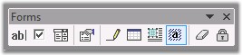
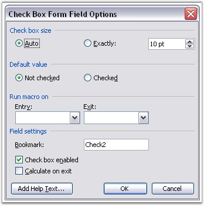
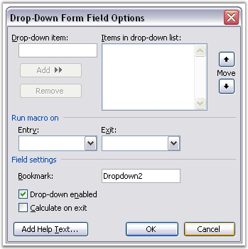
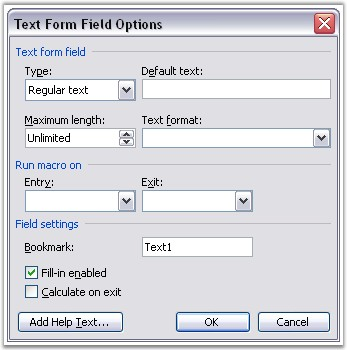

WFormField is the base abstract class for all form fields in DocIO (WCheckBox, WDropDownFormField and WTextFormField). There are three types of form fields.
· Text: text form field
· CheckBox: check box form field
· DropDown: drop-down form field
The WFormField class holds all the common properties for the form fields. The following are the common properties of the form fields.
· CalculateOnExit
· Enabled: defines whether the status bar form field is enabled
· FormFieldType: defines type of form field
· Help: represents form field help
· MacroOnEnd: defines the name of the macro to run on entry of form field
· MacroOnStart: defines the name of the macro to run on start of form field
· Name: represents the name of the form field
· StatusBarHelp: represents the help to display in the status bar
You can also insert these fields through the Forms toolbar in MS Word. The following screen shot illustrates a Forms toolbar in MS Word.

Figure 46: Forms Toolbar
Class Hierarchy
WTextRange
WField
WFormField
Public Properties
|
Name |
Description |
|
CalculateOnExit |
Gets or sets calculate on exit property. |
|
Enabled |
Gets or sets Enabled property (true if form field enabled). |
|
EntityType |
Gets the type of the entity. |
|
FieldPattern |
Gets or sets field pattern. |
|
FieldType |
Gets or sets field type. |
|
FieldValue |
Gets the field value. |
|
FormFieldType |
Gets type of this form field. |
|
Help |
Gets or sets form field help. |
|
MacroOnEnd |
Gets or sets the name of macros on end. |
|
MacroOnStart |
Gets or sets the name of macros on start. |
|
Name |
Gets form field title name (bookmark name). |
|
StatusBarHelp |
Gets or sets the status bar help. |
|
TextFormat |
Gets or sets regular text format. |
Note that the Form Field ActiveX controls shown in the following screenshot can only be preserved in doc and docx formats and cannot be inserted by using DocIO.
Figure 47: ActiveX Controls
WCheckBox class represents a check box form field in the Word document. To add a check box to the Word document, click Check Box Form Field on the Forms toolbar.
Figure 48: Forms Panel

Figure 49: CheckBox Properties in MS Word
CheckBoxSize property defines the size of the check box. When the SizeType property is set to Auto, the size of the check box will be set automatically. You can also set custom size for the check box. This is achieved by setting the SizeType property to Exactly.
DefaultCheckBoxValue defines the default value of the check box. You can use the Checked property to set the value of the check box.
You can use the AppendCheckBox function of WParagraph to append a check box to the end of the paragraph.
Class Hierarchy
WTextRange
|
WField
|
WFormField
|
WCheckBox
Public Methods
|
Name |
Description |
|
WCheckBox.WCheckBox (IWordDocument) |
Initializes a new instance of the WCheckBox class. |
Public Properties
|
Name |
Description |
|
CheckBoxSize |
Gets or sets size of checkbox (in integer). |
|
Checked |
Gets or sets Checked property. |
|
DefaultCheckBoxValue |
Gets or sets default checkbox value. |
|
EntityType |
Gets the type of the entity. |
|
SizeType |
Gets or sets check box size type. |
The following example illustrates how to use the WCheckBox class.
|
[C#]
IWordDocument doc = new WordDocument(); doc.EnsureMinimal(); IWParagraph par = doc.LastParagraph; WCheckBox checkBox = par.AppendCheckBox(); checkBox.Enabled = false; checkBox.StatusBarHelp = "Help1"; checkBox.Help = "Help2"; checkBox.DefaultCheckBoxValue = true; checkBox.SizeType = CheckBoxSizeType.Auto; checkBox.CalculateOnExit = true; par.AppendText(" CheckBox2: "); WCheckBox checkBox1 = par.AppendCheckBox(); checkBox1.CheckBoxSize = 30; checkBox1.SizeType = CheckBoxSizeType.Exactly; checkBox1.CalculateOnExit = false; checkBox1.Checked = true; doc.Save("TestDoc.doc"); |
|
[VB.NET]
Dim doc As IWordDocument = New WordDocument() doc.EnsureMinimal() Dim par As IWParagraph = doc.LastParagraph Dim checkBox As WCheckBox = par.AppendCheckBox() checkBox.Enabled = False checkBox.StatusBarHelp = "Help1" checkBox.Help = "Help2" checkBox.DefaultCheckBoxValue = True checkBox.SizeType = CheckBoxSizeType.Auto checkBox.CalculateOnExit = True par.AppendText(" CheckBox2: ") checkBox1 As WCheckBox = par.AppendCheckBox() checkBox1.CheckBoxSize = 30 checkBox1.SizeType = CheckBoxSizeType.Exactly checkBox1.CalculateOnExit = False checkBox1.Checked = True doc.Save("TestDoc.doc") |
WDropDownFormField class represents a drop-down form field in the Word document. To add a drop-down form field to the Word document, click DropDown Form Field on the Forms toolbar.
Figure 50: Forms Panel

Figure 51: DropDown Form Field Properties
DropDownSelectedIndex property is used to define the index of the record to be displayed in the drop-down form field. The record is chosen among the collection of the drop-down records. This collection is accessible through the DropDownItems property.
You can use the AppendDropDownFormField function of WParagraph to append drop-down form fields to the end of the paragraph.
Class Hierarchy
WTextRange
|
WField
|
WFormField
|
WDropDownFormField
Public Constructor
|
Name |
Description |
|
WdropDownForm.FieldWDropDownFormField (IWordDocument) |
Initializes a new instance of the WDropDownFormField class. |
Public Properties
|
Name |
Description |
|
DropDownItems |
Gets drop down items. |
|
DropDownSelectedIndex |
Gets or sets the selected drop-down index. |
|
[C#]
IWordDocument doc = new WordDocument(); doc.EnsureMinimal();
IWParagraph par = doc.LastParagraph; WDropDownFormField dropDown = par.AppendDropDownFormField(); dropDown.DropDownItems.Add("One"); dropDown.DropDownItems.Add("Two"); dropDown.DropDownSelectedIndex = 1; dropDown.CalculateOnExit = true; dropDown.Enabled = false; dropDown.Help = "Help2"; dropDown.StatusBarHelp = "Help1";
doc.Save("TestDoc.doc"); |
|
[VB.NET]
Dim doc As IWordDocument = New WordDocument() doc.EnsureMinimal()
Dim par As IWParagraph = doc.LastParagraph Dim dropDown As WDropDownFormField = par.AppendDropDownFormField() dropDown.DropDownItems.Add("One") dropDown.DropDownItems.Add("Two") dropDown.DropDownSelectedIndex = 1 dropDown.CalculateOnExit = True dropDown.Enabled = False dropDown.Help = "Help2" dropDown.StatusBarHelp = "Help1"
doc.Save("TestDoc.doc") |
WTextFormField class represents a text form field in Word document. To add a text form field to the Word document, click Text Form Field on the Forms toolbar.
Figure 52: Forms Panel

Figure 53: Text Form Field Properties
To set the format of the DocIO text directly from the field, you can use the StringFormat property. To get or set the default text for the text form field, you can use the DefaultText property.
 Note:
Text form field will display the default text only when the text of the
form field has no value, i.e., when the TextRange property (TextRange.Text) has
no value.
Note:
Text form field will display the default text only when the text of the
form field has no value, i.e., when the TextRange property (TextRange.Text) has
no value.
TextRange property is used to set the text of the text form field. Type property specifies the type of the text form field. The following are the types of the text form field.
· RegularText
· NumberText
· DateText
Class Hierarchy
WTextRange
|
WField
|
WFormField
|
WTextFormField
Public Constructor
|
Name |
Description |
|
WTextFormField.WTextFormField (IWordDocument) |
Initializes a new instance of the WTextFormField class. |
Public Properties
|
Name |
Description |
|
DefaultText |
Gets/sets default text for text form field. |
|
MaximumLength |
Gets/sets maximum text length. |
|
StringFormat |
Gets/sets string text format (text, date/time, number) directly. |
|
TextRange |
Gets/sets form field text range. |
|
Type |
Get/sets text form field type. |
The following three examples illustrate the different variants of text form field usage.
|
[C#]
Example 1
IWordDocument doc = new WordDocument(true); IWParagraph par = doc.LastParagraph;
// Append text form field to the paragraph. WTextFormField textFormField = par.AppendTextFormField("Hello"); textFormField.TextFormat = TextFormat.Uppercase; textFormField.Enabled = false; textFormField.Help = "Help2"; textFormField.StatusBarHelp = "Help1"; textFormField.MacroOnStart = "Test1"; textFormField.CalculateOnExit = true;
Example 2
// In this sample we modify all text form field in document. foreach (WSection sec in doc.Sections) { foreach (WTextBody body in sec.ChildEntities) { // Every WTextBody object has a collection of form fields. foreach (WFormField ffield in body.FormFields) { switch (ffield.FormFieldType) { case FormFieldType.TextInput: WTextFormField textField = (WTextFormField)ffield; textField.Type = TextFormFieldType.DateText;
// Setting of default text of form field. textField.DefaultText = "01/01/2007"; textField.StringFormat = "MM/dd/yyyy ";
// Setting character format of field (not text of form field). // This formatting you can see, when you press Alt+F9 on // document, which has form field. textField.CharacterFormat.FontName = "Comic Sans MS"; textField.CharacterFormat.Shadow = true; textField.CharacterFormat.FontSize = 20f;
// Setting text of text form field and it's character format. // If textField.TextRange.Text value is not equal to string.Empty // form field's text will be textField.TextRange.Text, in other // case textField.DefaultText. textField.TextRange.Text = string.Empty; textField.TextRange.CharacterFormat.FontName = "Comic Sans MS"; textField.TextRange.CharacterFormat.Shadow = true; textField.TextRange.CharacterFormat.FontSize = 20f; textField.TextRange.CharacterFormat.TextColor = Color.Blue; break;
default: break; } } } } |
|
[VB.NET]
Example 1
Dim doc As IWordDocument = New WordDocument(True) Dim par As IWParagraph = doc.LastParagraph
' Append text form field to the paragraph. Dim textFormField As WTextFormField = par.AppendTextFormField("Hello") textFormField.TextFormat = TextFormat.Uppercase textFormField.Enabled = False textFormField.Help = "Help2" textFormField.StatusBarHelp = "Help1" textFormField.MacroOnStart = "Test1" textFormField.CalculateOnExit = True
Example 2
' In this sample we modify all text form field in document. For Each sec As WSection In doc.Sections For Each body As WTextBody In sec.ChildEntities
'Every WTextBody object has a collection of form fields. For Each ffield As WFormField In body.FormFields Select Case ffield.FormFieldType Case FormFieldType.TextInput Dim textField As WTextFormField = CType(ffield, WTextFormField) textField.Type = TextFormFieldType.DateText
'Setting of default text of form field. textField.DefaultText = "01/01/2007" textField.StringFormat = "MM/dd/yyyy "
'Setting character format of field (not text of form field). 'This formatting you can see, when you press Alt+F9 on ' document, which has form field. textField.CharacterFormat.FontName = "Comic Sans MS" textField.CharacterFormat.Shadow = True textField.CharacterFormat.FontSize = 20.0F
'Setting text of text form field and it's character format. 'If textField.TextRange. Text value is not equal to string.Empty 'form field's text will be textField.TextRange.Text, in other 'case textField.DefaultText. textField.TextRange.Text = String.Empty textField.TextRange.CharacterFormat.FontName = "Comic Sans MS" textField.TextRange.CharacterFormat.Shadow = True textField.TextRange.CharacterFormat.FontSize = 20.0F textField.TextRange.CharacterFormat.TextColor = Color.Blue
Case Else End Select Next ffield Next body Next sec |
DocIO also provides option to add/remove form field shading. It specifies whether to turn on the gray shading on form fields using the below code snippet.
|
[C#]
document.Properties.FormFieldShading = false; |
|
[VB.NET]
document.Properties.FormFieldShading = False |